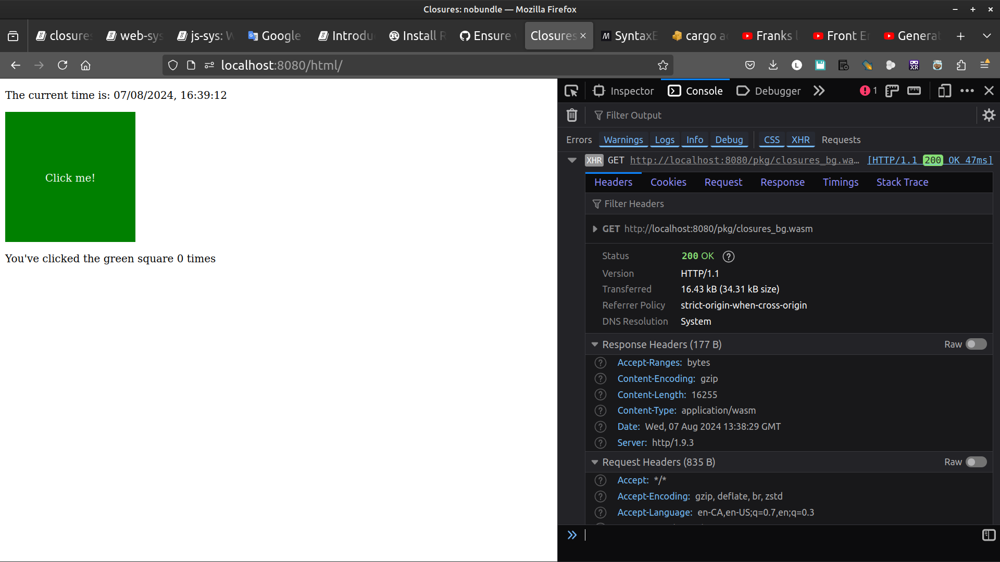

web-sys: Closures
One of the features of #[wasm_bindgen] is that you can pass closures defined in Rust off to JS. This can be a bit tricky at times, though, so the example here shows how to interact with some standard web APIs with closures.
_ [wasm-bindgen Guide]
setup the project
cargo new closures --lib
cd closures
mkdir -p www/js www/html
cargo add wasm-bindgen js-sys web-sys
edit Cargo.toml to add crate-type
[lib]
crate-type = ["cdylib",]
web-sys as a dependecy
In Cargo.toml change the web-sys entry
web-sys = "0.3.65"
to
[dependencies.web-sys]
version = "0.3.65"
features = [
'CssStyleDeclaration',
'Document',
'Element',
'HtmlElement',
'Window',
]
in www/html/index.html we have
<!DOCTYPE html>
<html>
<head>
<meta content="text/html;charset=utf-8" http-equiv="Content-Type"/>
<title>Closures: nobundle</title>
<style>
#green-square {
background: green;
width: 200px;
height: 200px;
text-align: center;
line-height: 200px;
color: white;
}
#green-square span {
display: inline-block;
vertical-align: middle;
}
</style>
</head>
<body>
<div id='loading'>
Loading...
</div>
<div id='script' style='display:none'>
<p>
The current time is:
<span id='current-time'>...</span>
</p>
<div id='green-square'>
<span>Click me!</span>
</div>
<p>
You've clicked the green square
<span id='num-clicks'>0</span>
times
</p>
</div>
<script type="module" src="../js/index.js"></script>
</body>
</html>
and in www/js/index.js
import init from "../pkg/closures.js"
async function run() {
const wasm = await init();
}
run();
Everything happens in src
#![allow(unused)] fn main() { // src/lib.rs use js_sys::{Array, Date}; use wasm_bindgen::prelude::*; use web_sys::{Document, Element, HtmlElement, Window}; #[wasm_bindgen(start)] fn run() -> Result<(), JsValue> { let window = web_sys::window().expect("should have a window in this context"); let document = window.document().expect("window should have a document"); // One of the first interesting things we can do with closures is simply // access stack data in Rust! let array = Array::new(); array.push(&"Hello".into()); array.push(&1.into()); let mut first_item = None; array.for_each(&mut |obj, idx, _arr| match idx { 0 => { assert_eq!(obj, "Hello"); first_item = obj.as_string(); } 1 => assert_eq!(obj, 1), _ => panic!("unknown index: {}", idx), }); assert_eq!(first_item, Some("Hello".to_string())); // Below are some more advanced usages of the `Closure` type for closures // that need to live beyond our function call. setup_clock(&window, &document)?; setup_clicker(&document); // And now that our demo is ready to go let's switch things up so // everything is displayed and our loading prompt is hidden. document .get_element_by_id("loading") .expect("should have #loading on the page") .dyn_ref::<HtmlElement>() .expect("#loading should be an `HtmlElement`") .style() .set_property("display", "none")?; document .get_element_by_id("script") .expect("should have #script on the page") .dyn_ref::<HtmlElement>() .expect("#script should be an `HtmlElement`") .style() .set_property("display", "block")?; Ok(()) } // Set up a clock on our page and update it each second to ensure it's got // an accurate date. // // Note the usage of `Closure` here because the closure is "long lived", // basically meaning it has to persist beyond the call to this one function. // Also of note here is the `.as_ref().unchecked_ref()` chain, which is how // you can extract `&Function`, what `web-sys` expects, from a `Closure` // which only hands you `&JsValue` via `AsRef`. fn setup_clock(window: &Window, document: &Document) -> Result<(), JsValue> { let current_time = document .get_element_by_id("current-time") .expect("should have #current-time on the page"); update_time(¤t_time); let a = Closure::<dyn Fn()>::new(move || update_time(¤t_time)); window .set_interval_with_callback_and_timeout_and_arguments_0(a.as_ref().unchecked_ref(), 1000)?; fn update_time(current_time: &Element) { current_time.set_inner_html(&String::from( Date::new_0().to_locale_string("en-GB", &JsValue::undefined()), )); } // The instance of `Closure` that we created will invalidate its // corresponding JS callback whenever it is dropped, so if we were to // normally return from `setup_clock` then our registered closure will // raise an exception when invoked. // // Normally we'd store the handle to later get dropped at an appropriate // time but for now we want it to be a global handler so we use the // `forget` method to drop it without invalidating the closure. Note that // this is leaking memory in Rust, so this should be done judiciously! a.forget(); Ok(()) } // We also want to count the number of times that our green square has been // clicked. Our callback will update the `#num-clicks` div. // // This is pretty similar above, but showing how closures can also implement // `FnMut()`. fn setup_clicker(document: &Document) { let num_clicks = document .get_element_by_id("num-clicks") .expect("should have #num-clicks on the page"); let mut clicks = 0; let a = Closure::<dyn FnMut()>::new(move || { clicks += 1; num_clicks.set_inner_html(&clicks.to_string()); }); document .get_element_by_id("green-square") .expect("should have #green-square on the page") .dyn_ref::<HtmlElement>() .expect("#green-square be an `HtmlElement`") .set_onclick(Some(a.as_ref().unchecked_ref())); // See comments in `setup_clock` above for why we use `a.forget()`. a.forget(); } }
build and serve
wasm-pack build --target web --no-typescript --out-dir www/pkg
http www
open index.html
firefox http://localhost:8000/html/

after clicking 3 times on the green square